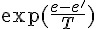

實作：通用的「模擬退火法」架構
前言
在上一篇文章中，我們介紹了一個通用的爬山演算法架構，而模擬退火法其實是爬山演算法的一個改良版，其設計理念是參考打鐵時金屬從高溫逐漸緩慢降溫，可以讓結構更緊緻的這種概念，在「流水下山演算法」上加入了溫度的概念。
當溫度很高的時候，模擬退火法基本上就像隨機亂走一樣，但是當溫度逐漸下降之後，模擬退火法就會逐漸凝固，只能朝著較好的解前進，向著較差解前進的機率會逐漸縮小。
當溫度幾乎降到零的時候，模擬退火法基本上就會退化成爬山演算法，於是最後還是會固定在某個「區域最佳解」上面。但是由於經過從高溫緩慢降溫的過程，所以模擬退火法比較有機會在高溫時跳出區域最佳解，然後找到更好的解，甚至是全域最佳解之後才凝固，這就是「模擬退火法」的設計原理了。
以下是模擬退火法的演算法的簡要寫法：
Algorithm SimulatedAnnealing(s)
while (溫度還不夠低，或還可以找到比 s 更好的解 s' 的時候)
根據能量差與溫度，用機率的方式決定是否要移動到新解 s'。
將溫度降低一些
end
end 在上述演算法中，所謂的機率的方式，是採用  這個機率公式，去判斷是否要從 s 移動到 s'，其中 e 是 s 的能量值，而 e' 是 s' 的能量值。
接著，就讓我們來實作一個通用的模擬退火法架構吧 (與前述爬山演算法共用的「解答表示」solution 部份，我們就不再重複貼出了)
通用的模擬退火法架構
檔案：simulatedAnnealing.js
var simulatedAnnealing = function() {} // 模擬退火法的物件模版 (類別)
simulatedAnnealing.prototype.P = function(e, enew, T) { // 模擬退火法的機率函數
if (enew < e)
return 1;
else
return Math.exp((e-enew)/T);
}
simulatedAnnealing.prototype.run = function(s, maxGens) { // 模擬退火法的主要函數
var sbest = s; // sbest:到目前為止的最佳解
var ebest = s.energy(); // ebest:到目前為止的最低能量
var T = 100; // 從 100 度開始降溫
for (var gens=0; gens<maxGens; gens++) { // 迴圈，最多作 maxGens 這麼多代。
var snew = s.neighbor(); // 取得鄰居解
var e = s.energy(); // e : 目前解的能量
var enew = snew.energy(); // enew : 鄰居解的能量
T = T * 0.999; // 每次降低一些溫度
if (this.P(e, enew, T) > Math.random()) { // 根據溫度與能量差擲骰子，若通過
s = snew; // 則移動到新的鄰居解
console.log("%d T=%s %s", gens, T.toFixed(3), s.toString()); // 印出觀察
}
if (enew < ebest) { // 如果新解的能量比最佳解好，則更新最佳解。
sbest = snew;
ebest = enew;
}
}
console.log("solution: %s", sbest.toString()); // 印出最佳解
return sbest; // 傳回最佳解
}
module.exports = simulatedAnnealing; // 將模擬退火演算法的類別匯出。實例：求解平方根
在此，我們將以求解 4 的平方根為例，測試一下上述演算法是否能夠找到正確的解答。
檔案：simulatedAnnealingNumber.js
var simulatedAnnealing = require("./simulatedAnnealing"); // 引入模擬退火法類別
var solutionNumber = require("./solutionNumber"); // 引入平方根解答類別
var sa = new simulatedAnnealing(); // 建立模擬退火法物件
// 執行模擬退火法 (從「解答=0.0」開始尋找, 最多一萬代。
sa.run(new solutionNumber(0.0), 10000);執行結果：
0 T=99.900 energy(-0.010)=4.000
1 T=99.800 energy(0.000)=4.000
...
12 T=98.708 energy(-0.010)=4.000
13 T=98.609 energy(-0.020)=4.000
14 T=98.510 energy(-0.030)=3.999
15 T=98.412 energy(-0.020)=4.000
16 T=98.314 energy(-0.030)=3.999
17 T=98.215 energy(-0.040)=3.998
18 T=98.117 energy(-0.050)=3.998
19 T=98.019 energy(-0.040)=3.998
...
5072 T=0.625 energy(1.250)=2.437
5073 T=0.624 energy(1.240)=2.462
5074 T=0.624 energy(1.230)=2.487
5075 T=0.623 energy(1.240)=2.462
5076 T=0.622 energy(1.250)=2.437
5077 T=0.622 energy(1.260)=2.412
5078 T=0.621 energy(1.270)=2.387
5079 T=0.620 energy(1.280)=2.362
...
6615 T=0.133 energy(1.950)=0.197
6617 T=0.133 energy(1.940)=0.236
6618 T=0.133 energy(1.930)=0.275
6619 T=0.133 energy(1.920)=0.314
6620 T=0.133 energy(1.930)=0.275
6621 T=0.133 energy(1.940)=0.236
6622 T=0.133 energy(1.930)=0.275
...
9377 T=0.008 energy(1.990)=0.040
9378 T=0.008 energy(2.000)=0.000
9396 T=0.008 energy(2.010)=0.040
9397 T=0.008 energy(2.000)=0.000
9528 T=0.007 energy(2.010)=0.040
9531 T=0.007 energy(2.000)=0.000
solution: energy(2.000)=0.000您可以看到上述模擬退火法程式，在一開始的時候幾乎都在亂走，因此浪費了很多時間，但也正是因為這種特性，模擬退火法比較有機會跳脫那些小山谷，而有機會找到更深的山谷，這正式模擬退火法的特性。
雖然花的比較多的時間，但是模擬退火法最後還是正確的找到了 4 的平方根，傳回了 2.000 的結果。
實例：多變數函數的最佳化
在此，我們將以求解  這個函數的最低點，看看上述演算法對多變數函數是否能正常運作。
這個函數的最低點，看看上述演算法對多變數函數是否能正常運作。
檔案：simulatedAnnealingArray.js
var simulatedAnnealing = require("./simulatedAnnealing"); // 引入模擬退火法類別
var solutionArray = require("./solutionArray"); // 引入多變數解答類別 (x^2+3y^2+z^2-4x-3y-5z+8)
var sa = new simulatedAnnealing(); // 建立模擬退火法物件
// 執行模擬退火法 (從「解答(x,y,z)=(1,1,1)」開始尋找, 最多執行 2 萬代。
sa.run(new solutionArray([1,1,1]), 20000);執行結果：
0 T=99.900 energy( 1.000 1.000 0.990 )=1.030
1 T=99.800 energy( 1.000 0.990 0.990 )=1.000
2 T=99.700 energy( 1.000 0.980 0.990 )=0.971
3 T=99.601 energy( 0.990 0.980 0.990 )=0.991
4 T=99.501 energy( 0.990 0.990 0.990 )=1.021
5 T=99.401 energy( 1.000 0.990 0.990 )=1.000
6 T=99.302 energy( 1.000 0.990 1.000 )=0.970
...
5985 T=0.251 energy( 0.870 1.260 1.770 )=0.543
5986 T=0.250 energy( 0.870 1.250 1.770 )=0.497
5987 T=0.250 energy( 0.870 1.250 1.760 )=0.512
5988 T=0.250 energy( 0.870 1.250 1.750 )=0.527
5989 T=0.250 energy( 0.870 1.250 1.760 )=0.512
5990 T=0.249 energy( 0.860 1.250 1.760 )=0.535
...
15036 T=0.000 energy( 2.000 0.500 2.510 )=-3.000
15038 T=0.000 energy( 2.000 0.500 2.500 )=-3.000
15173 T=0.000 energy( 2.010 0.500 2.500 )=-3.000
15174 T=0.000 energy( 2.000 0.500 2.500 )=-3.000
15261 T=0.000 energy( 2.000 0.500 2.490 )=-3.000
15265 T=0.000 energy( 2.000 0.500 2.500 )=-3.000
solution: energy( 2.000 0.500 2.500 )=-3.000您可以看到，上述的模擬退火法程式，總共花了一萬五千多代，終於找到了該多變數函數的谷底，雖然速度不快，但也總算是達成任務了。
結語
當然，模擬退火法雖然比較有機會跳脫小山谷，去找到更深的山谷，但這並不表示模擬退火法一定可以找到最深的山谷。
當溫度已經降到很低的時後，模擬退火法就會逐漸凝固，於是就會固定在某個山谷不出來了。
事實上、沒有任何一種優化方法可以在「多項式時間內」保證找到任何函數的最低點，否則「NP-Complete」問題不就被解掉了，而「NP-Complete」問題事實上在計算理論領域裡，一直還是個最困難的未解之謎啊！
參考文獻
【本文由陳鍾誠取材並修改自 [維基百科]，採用創作共用的 姓名標示、相同方式分享 授權】